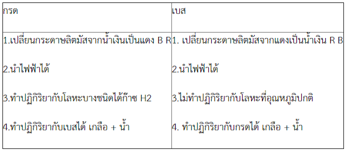
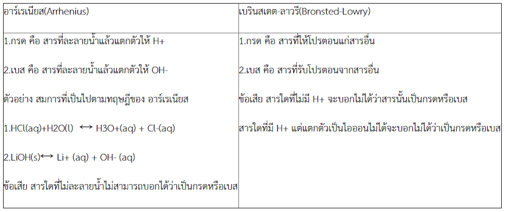
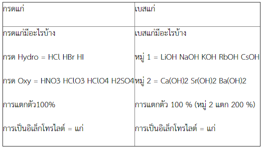
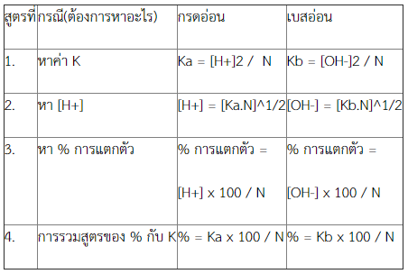

1 กรด - เบส
สารละลายอิเล็กโทรไลต์(Electrolyte Solution) = สารละลายที่นำไฟฟ้าได้ เพราะ ตัวถูกละลายแตกตัวเป็นไอออนบวกและไอออนลบ
*ตัวอย่าง สารละลายอิเล็กโทรไลต์ ได้แก่ สารละลายกรด สารละลายเบส สารละลายเกลือ
****(อิเล็กโทรไลต์แก่ แตกตัวดี นำไฟฟ้าดี อิเล็กโทรไลต์อ่อน แตกตัวไม่ดี นำไฟฟ้าไม่ดี)****
กรด&เบส
กรด แบ่งได้ 2 ประเภทคือ กรดอินทรีย์ กรดอนินทรีย์
เบส แบ่งได้ 2 ประเภทคือ เบสอินทรีย์ เบสอนินทรีย์
*กรด มี 2 ชื่อคือ กรดไฮโดร กับกรดออกซี่
Hydro = HCl* HBr HI HF HCN ฯลฯ กรดเหล่านี้ออกเสียง “ไฮโดร” นำหน้าแล้วตามด้วยสารที่ตามมา
*HCl = ก๊าซไฮโดรเจนคลอไรด์ หรือ กรดเกลือ
Oxy = HNO3 H2SO4 HClO3 H2CO3 * ฯลฯ กรดเหล่านี้ออกเสียง “อิก” ลงท้ายเสมอ * H2CO3 ไม่เสถียรจะแตกตัวให้ H2O , CO2
สมบัติทั่วไปของสารละลายกรด-เบส

ทฤษฎีกรด-เบส

คู่กรด-เบส = สารที่เป็นคู่กรด-เบสกัน H+ ต่างกัน 1 ตัว โดยที่ คู่กรดจะมี H+ มากกว่าคู่เบส 1 ตัว
ความแรงของกรดและเบส = การแตกตัวในการให้โปรตอน(กรด) ความสามารถในการรับโปรตอน(เบส)
CH3COOH (aq) + H2O (aq) ↔ CH3COO- (aq) + H3O+ (aq)
****เราต้องรู้ทิศทางการเลื่อนของสมดุลก่อน เราจึงจะบอกถึงความแรงได้****
1.ถ้าสมดุลเลื่อนไปทางขวา CH3COOH เป็นกรดแรงกว่า H3O+ / H2O เป็นเบสแรงกว่า CH3COO-
2.ถ้าสมดุลเลื่อนไปทางซ้าย H3O+เป็นกรดแรงกว่า CH3COOH / CH3COO-เป็นเบสแรงกว่า H2O
ถ้าค่า K > 1 สมดุลเลื่อนไปข้างหน้า(สารผลิตภัณฑ์มากกว่าสารตั้งต้น)
K < 1 สมดุลเลื่อนย้อนกลับ(สารผลิตภัณฑ์น้อยกว่าสารตั้งต้น)
K = 1 ไปข้างหน้าเท่ากับย้อนกลับ (สารผลิตภัณฑ์ = สารตั้งต้น) ความแรงทั้ง 2 ข้างเท่ากัน
เปรียบเทียบกรดแก่กับเบสแก่

2. ชนิดของกรดและเบส
กรด แบ่งตามการแตกตัว แบ่งได้ 3 ชนิด
1.กรด Monoprotic แตกตัว 1 ได้แก่ HNO3 , HClO3 , HClO4 , HCN
2.กรด Diprotic แตกตัว 2 ได้แก่ H2SO4 , H2CO3
3.กรด Polyprotic แตกตัว 3 ได้แก่ H3PO4
การแตกตัวของกรด Polyprotic แต่ละครั้งจะให้ H+ ไม่เท่ากัน แตกครั้งแรกจะแตกได้ดีมาก ค่า Ka สูงมากแต่แตกครั้งต่อ ๆ ไปจะมีค่า Ka ต่ำมาก เพราะประจุลบในไอออนดึงดูด H+ ไว้ดังสมการ
H2SO4 ↔ H+ + HSO4- Ka1 = 1011
HSO4- ↔ H+ + SO42- Ka2 = 1.2 x 10-2
เนื่องมาจากกรด Polyprotic มักมีค่า K1>>K2>>K3 H+ ในสารละลายส่วนใหญ่จะได้มาจากการแตกตัวครั้งแรก
ถ้าค่า K1 มากกว่า K2 =103 เท่าขึ้นไปจะพิจารณาค่า pH ของสารละลายกรด Polyprotic ได้จากค่า K1 เท่านั้น แต่ถ้าค่า K2 มีค่าไม่ต่ำมาก จะต้องนำค่า K2 มาพิจารณาด้วย
เบส แบ่งตาม จำนวน OH- ในเบส แบ่งได้เป็น 3 ชนิด คือ
1.เบสที่มี OH- ตัวเดียว เช่น LiOH NaOH KOH RbOH CsOH
2.เบสที่มี OH- 2 ตัว เช่น Ca(OH)2 Sr(OH)2 Ba(OH)2
3.เบสที่มี OH- 3 ตัว เช่น Al(OH)3 Fe(OH)3
รวมสูตรที่ใช้คำนวณในกรณีหา กรดอ่อน เบสอ่อน ไม่ผสมกัน (Pure)

3. การแตกตัวของกรดและเบส
การแตกตัวของกรดแก่และเบสแก่ จะแตกตัวได้หมด 100% หมายถึง การแตกตัวของกรดแก่และเบสแก่ เป็นไอออนได้หมดในตัวทำละลายซึ่งส่วนใหญ่เป็นน้ำ เช่น การแตกตัวของกรด HCl จะได้ H + หรือ H 3O + และ Cl - ไม่มี HCl เหลืออยู่ หรือการแตกตัวของเบส เช่น NaOH ได้ Na + ไม่มี NaOH เหลืออยู่ และ OH
3. อินดิเคเตอร์
อินดิเคเตอร์ ส่วนใหญ่เป็นสารอินทรีย์มีสมบัติเป็นกรดอ่อน มีโครงสร้างซับซ้อนเป็นสารที่มีสีและสามารถเปลี่ยนสีได้เมื่อ pH ของสารละลายเปลี่ยนไป เป็นสารที่ใช้บอกความเป็นกรด-เบส ของสารละลายได้อย่างหนึ่ง ตามทฤษฎีของ Ostwald กล่าวว่าเมื่ออินดิเคเตอร์อยู่ในรูปโมเลกุลและเมื่อยู่ในรูปไอออนจะมีสีต่างกัน
การไทเทรตกรด-เบส
การไทเทรตกรด-เบส เป็นการไทเทรตระหว่างสารละลายกรดกับเบส ใช้ในการหาปริมาณหรือความเข้มข้นที่แน่นอนของกรดหรือเบส ทำได้โดยนำสารตัวอย่างมาไทเทรตกับกรดหรือเบสที่ทราบความเข้มข้นที่แน่นอน แล้วสังเกตสีของอินดิเคเตอร์ที่เปลี่ยนไปเมื่อปฏิกิริยาเกิดจนถึงจุดสมมูล ขณะไทเทรต pH ถ้าเลือกใช้อินดิเคเตอร์ที่เหมาะสมจะบอกจุดยุติที่ใกล้เคียงกับจุดสมมูลได้ การไทเทรตกรด-เบส สามารถแบ่งออกได้เป็น 4 แบบ ซึ่งการไทเทรตแต่ละแบบให้ผลลัพธ์ที่แตกต่างกันออกไป ดังนี้
1. การไทเทรตระหว่างกรดแก่กับเบสแก่
2. การไทเทรตระหว่างเบสอ่อนกับกรดแก่
3. การไทเทรตระหว่างกรดอ่อนกับเบสแก่
4. การไทเทรตระหว่างกรดอ่อนกับเบสอ่อน
4. สารละลายบัฟเฟอร์
หมายถึง สารละลายที่ได้จากการผสมของกรดอ่อนกับคู่เบสของกรดนั้น หรือเบสอ่อนกับคู่กรดของเบสนั้น จะได้สารละลายที่มีไอออนร่วม
หน้าที่สำคัญของสารละลายบัฟเฟอร์ คือเป็นสารละลายที่ ใช้ควบคุม ความเป็นกรดและเบสของสารละลาย เพื่อไม่ให้เปลี่ยนแปลงมาก เมื่อเติมกรดหรือเบสลงไปเล็กน้อย นั่นคือสามารถ รักษาระดับ pH ของสารละลายไว้ได้เกือบคงที่เสมอ แม้ว่าจะเติมน้ำหรือเติมกรดหรือเบสลงไปเล็กน้อย ก็ไม่ทำให้ pH ของสารละลายเปลี่ยนแปลงไปมากนัก เราเรียกความสามารถในการต้านทานการเปลี่ยนแปลง pH นี้ว่า buffer capacity